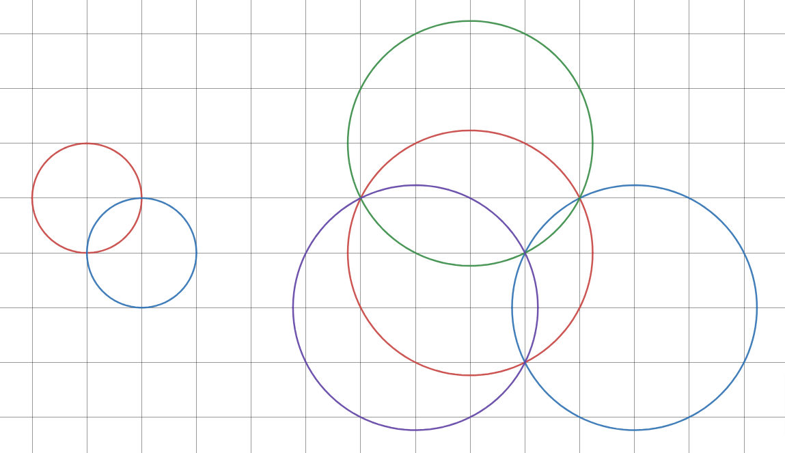

We say two circles on the plane harmonise if the circles intersect at two grid pointsA point with integer coordinates, in which case the two intersection points are called the harmony points.
A set of circles on the plane is called consonant if it satisfies all the following requirements:
It can be proven that the number of unique harmony points of a consonant set of circles cannot be smaller than the number of circles. If the number of unique harmony points equals the number of circles, we say the consonant set is perfect.
For example, here are two perfect consonant sets of circles:

Let $R(n)$ be the minimal radius $r$ such that a perfect consonant set of $n$ or more circles with radius $r$ exists.
You are given $R(2) = 1$ and $R(4) = \sqrt{5}$.
Find $R(500)^2$.
No test cases available.